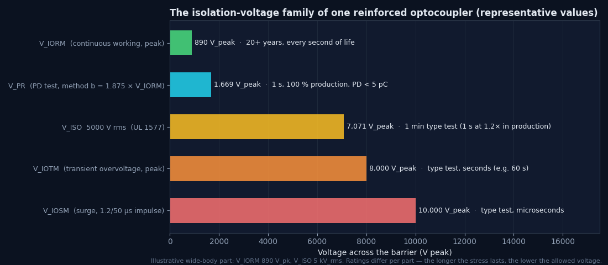
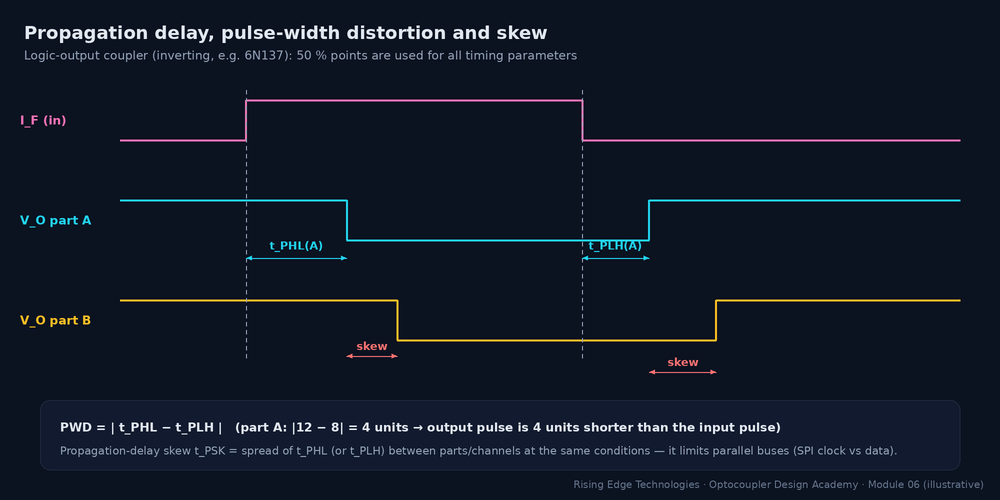
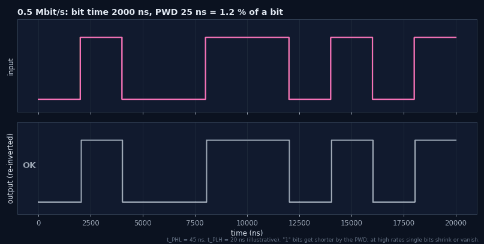
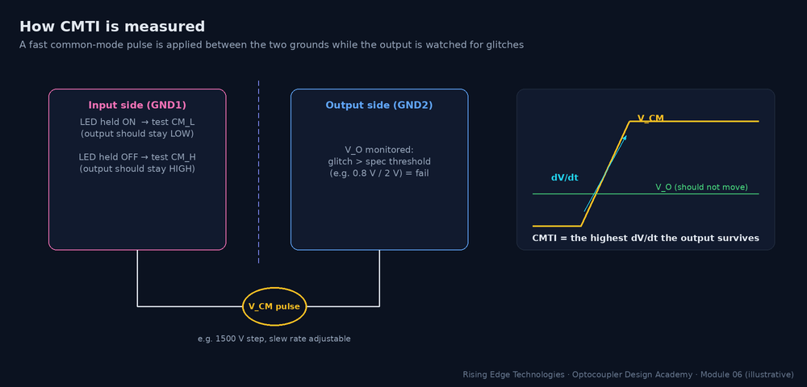
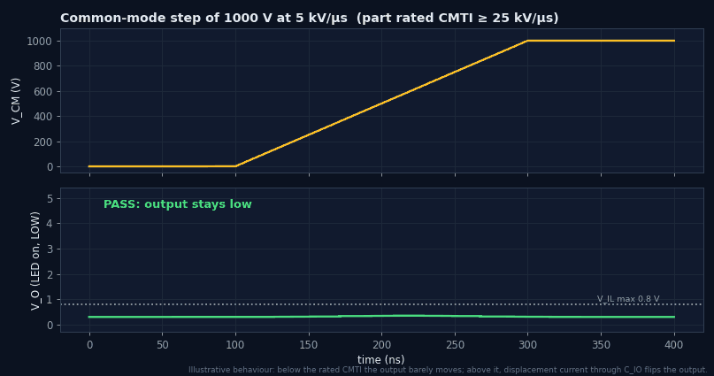
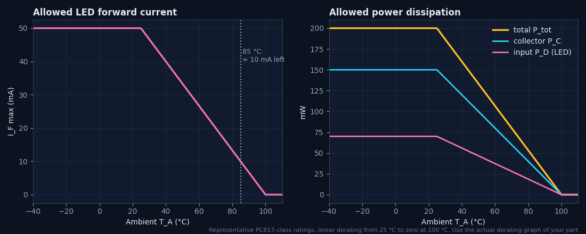

Optocoupler Parameters
Every number on the datasheet that matters, treated quantitatively: CTR and its dependencies, the full isolation voltage family, forward-current limits, propagation delay and pulse-width distortion, common-mode transient immunity (CMTI), and thermal behavior.
Illustrations and animations are original teaching drawings, not to scale. Values marked representative are typical of common parts; always confirm against the current datasheet or standard you design to.
Every optocoupler datasheet groups its numbers the same way. Knowing the groups lets you check a design systematically instead of hunting for the one number that seems relevant:
| Group | Parameters | Question it answers |
|---|---|---|
| Transfer | CTR, IF threshold (logic parts), CTRsat | How much output do I get per unit of input? |
| Isolation | VISO, VIORM, VIOTM, VIOSM, VPR, RIO, CIO | What voltage can the barrier stand, for how long? |
| Input (LED) | IF, IFP, VR, VF, PD | How hard may I drive the LED? |
| Output | VCEO, VECO, IC, PC, ICEO, VCE(sat) | What can the output switch and survive? |
| Timing | tr, tf, tPHL, tPLH, PWD, tPSK | How fast, and how accurately in time? |
| Common-mode | CMTI (CMH, CML) | Will fast ground shifts corrupt the output? |
| Thermal | Ptot, RθJA, TJ, derating curves | Will it overheat at my ambient temperature? |
CTR = IC/IF × 100 %, measured at stated IF, VCE and TA (typically 5 mA, 5 V, 25 °C). The datasheet minimum applies only at that point. Module 4 showed why CTR moves with current, temperature and VCE; Module 9 adds ageing. Here we put them together into one worst-case number.
- kIF — from the normalised CTR–IF curve at your IF
- kT — from the CTR–TA curve at your worst temperature (hot or cold)
- kVCE — CTR reduction at your VCE (switching designs live near VCE(sat))
- kage — end-of-life factor from ageing data (0.5 is a common conservative choice)
| CTR spec line | Typical test condition | Use it for |
|---|---|---|
| CTR (bin min/max) | IF = 5 mA, VCE = 5 V, 25 °C | Linear/active designs; starting point for all |
| CTRsat or VCE(sat) at IF/IC | e.g. IF = 20 mA, IC = 1 mA | Switching designs: guarantees a saturation point |
| CTR at low IF | e.g. IF = 1 mA | Low-power designs (some parts specify it) |
| CTR ratio / symmetry | AC-input parts | Equal pulses from both LEDs |
Worked example — worst-case IF for a 1 mA output
PC817 rank B (CTRmin 130 %), operating at IF near 3 mA (kIF 0.9), up to 70 °C (kT 0.8), near saturation (kVCE 0.9), 10-year life (kage 0.5).- CTREOL = 130 % × 0.9 × 0.8 × 0.9 × 0.5 = 42 %, less than a third of the headline figure.
- IF,required = 1 mA / 0.42 ≈ 2.4 mA. Choose 3 mA, which also confirms the kIF assumption.
- With an unranked part (50 % min) the same chain gives 16 % and needs 6.2 mA. Ordering the rank saves LED current and life.
No single “isolation voltage” exists. A barrier is rated for several stresses of very different duration, and the allowed voltage falls as the duration grows. Mixing up rms and peak, or test and working ratings, is the most common isolation mistake in design reviews.

| Symbol | Meaning | Unit / duration | Standard |
|---|---|---|---|
| VISO | Withstand test voltage: no breakdown | Vrms, 60 s type test (1 s at 1.2× in production) | UL 1577 |
| VIORM | Maximum repetitive peak working voltage | Vpeak, continuous for life | IEC 60747-5-5 / VDE 0884-5 |
| VIOWM | Working voltage expressed as rms (some sheets) | Vrms, continuous | IEC 60747-5-5 |
| VPR | Partial-discharge test voltage | Vpeak; 1.875×VIORM for 1 s (method b, 100 %); 1.6× (method a, sample) | IEC 60747-5-5 |
| VIOTM | Maximum transient overvoltage | Vpeak, seconds | IEC 60747-5-5 |
| VIOSM | Maximum surge isolation voltage | Vpeak, 1.2/50 µs impulse | IEC 60747-5-5 |
| RIO | Insulation resistance input–output | Ω at e.g. 500 V DC (often ≥ 1011–1012 Ω) | datasheet |
| CIO | Input–output capacitance | pF (≈ 0.5–1 pF typ) | datasheet |
- A 5000 Vrms VISO therefore stresses the barrier to 7071 Vpeak during the test
- Compare the peak working voltage (including ripple and switching overshoot) with VIORM
Worked example — a 690 V AC motor drive
Line-to-earth working voltage ≈ 400 Vrms; DC bus up to 1000 V DC during regeneration.- Sinusoidal working peak = 1.414 × 400 = 566 Vpk, but the DC bus reaches 1000 V, so the barrier sees up to 1000 Vpk.
- A part with VIORM = 890 Vpk is not sufficient, even though its VISO of 5000 Vrms looks huge.
- Choose VIORM ≥ 1140–1230 Vpk (stretched SO, wide SO-16), and confirm VIOTM against the drive standard’s transient requirement.
The LED is the only part of the optocoupler that wears out, so its ratings deserve respect. Four limits matter:
| Parameter | Typical value (PC817-class) | What happens beyond it |
|---|---|---|
| IF (continuous) | 50 mA abs. max, derated with temperature | Accelerated light-output degradation; junction overheating |
| IFP / IFM (pulse) | Up to ≈ 1 A for µs-scale pulses at low duty (part-dependent) | Bond-wire and die damage; only for short pulses at low duty |
| VR (reverse) | 5–6 V | LED junction breakdown; permanent damage |
| VF | 1.2 V typ, 1.4 V max at 20 mA (GaAs) | Not a limit, but sets drive-resistor worst case |
LED reverse protection
Infrared LEDs break down at only a few volts in reverse. Any input that can see reversed polarity (swapped 24 V field wiring, AC coupling, inductive kick) needs protection. Put a small-signal diode (e.g. 1N4148) in anti-parallel across the LED, or a series diode. The anti-parallel diode clamps reverse voltage to ≈ 0.7 V. The series diode blocks it entirely, at the cost of more headroom.
Worked example — pulsed drive to save power
A sensor interface pulses the LED at 20 mA for 100 µs every 10 ms (duty 1 %).- Average IF = 20 mA × 0.01 = 0.2 mA, so ageing and heating track the average and peak current density, both far below limits.
- Check the pulse is within the IFP curve (pulse width vs duty) and that the output (CTR at 20 mA) settles within the 100 µs window: ton of a few µs fits comfortably.
The output transistor has its own voltage, current and power limits, completely independent of the isolation ratings:
| Parameter | Typical (phototransistor) | Design note |
|---|---|---|
| VCEO | 35–80 V depending on vendor/part | Must exceed the pull-up supply plus any inductive or line transients |
| VECO | 6–7 V | Reverse voltage on the output: tiny! Protect when the output can be back-driven |
| IC max | 50 mA | Continuous collector current; also limited by PC |
| PC (collector power) | ≈ 150 mW at 25 °C | IC × VCE in linear operation adds up quickly |
| ICEO (dark current) | nA at 25 °C, rising steeply hot | Check leakage × pull-up at maximum temperature |
| VCE(sat) | ≤ 0.2–0.4 V at stated IF/IC | Guaranteed only at its own test condition |
For phototransistor parts, datasheets give tr/tf/ton/toff at a stated RL (Module 4). For logic and driver parts, four timing numbers describe how faithfully a pulse crosses the barrier:

| Parameter | Definition | Typical (6N137-class) | Limits |
|---|---|---|---|
| tPHL, tPLH | Input 50 % to output 50 % (both edges) | ≈ 20–75 ns | Latency; loop delay in control systems |
| PWD | |tPHL − tPLH| | ≤ ≈ 25–35 ns | Bit-width accuracy; PWM duty error |
| tPSK (skew) | Spread of delays between parts/channels | tens of ns | Parallel buses (SPI clock vs data), H-bridge dead time |
| Data rate | Maximum signalling rate specified | 10 MBd (6N137) | Usually set by PWD, not by tP |

Worked example — isolated UART
PWDmax = 35 ns.- At 115.2 kbit/s: tbit = 8.68 µs → 0.4 %: negligible.
- At 1 Mbit/s: 1000 ns → 3.5 %: fine.
- At 5 Mbit/s: 200 ns → 17.5 %: marginal once the receiver’s own sampling error is added. Choose a lower-PWD part or a digital isolator.
Common-mode transient immunity (CMTI) is the maximum rate of change of voltage between the two grounds that the part tolerates without its output changing state. It is specified separately for output-high (CMH) and output-low (CML), in kV/µs, at a stated common-mode amplitude (e.g. 1000–1500 V).

| Term | Meaning |
|---|---|
| Static CMTI | Output held in a steady state (high or low) during the transient: the datasheet test |
| Dynamic CMTI | Transient occurs while the output is switching (more demanding; specified by some modern parts) |
| CMH / CML | Immunity with output high / low; the lower one governs |
| Typical ratings | Standard phototransistor/logic parts: ones to tens of kV/µs; shielded logic and gate-driver grades: 25–50 kV/µs min; newest parts ≥ 100 kV/µs |

Optocouplers dissipate little power, but they sit in hot places (next to power stages, inside sealed enclosures), and their ratings derate with temperature. Two heat sources share one small package: the LED (IF·VF) and the output (IC·VCE).
- RθJA — junction-to-ambient thermal resistance, a few hundred °C/W for small packages
- Use average power for duty-cycled operation, provided the pulses are short relative to the thermal time constant

Worked example — hot PLC input
IF = 10 mA (VF 1.2 V), output saturated at 10 mA and 0.3 V, 100 % on, TA = 85 °C, RθJA = 350 °C/W, Ptot 200 mW at 25 °C.- P = 12 mW + 3 mW = 15 mW.
- TJ ≈ 85 + 0.015 × 350 ≈ 90 °C.
- Allowed at 85 °C: 200 × (100 − 85)/75 = 40 mW. 15 mW is fine, but IF = 10 mA equals the derated 10 mA limit of Figure 4. Reduce IF or pick a part rated to 110 °C.
Min/max, not typ
Design with the limiting column, corrected from the datasheet test conditions to yours.
CTR shrinks
CTREOL = CTRmin × kIF × kT × kVCE × kage, often ≈ 30–40 % of the headline figure.
Peak vs rms
VISO is rms and short-term; VIORM is peak and continuous. Compare peak working voltage with VIORM.
LED is fragile in reverse
VR ≈ 5–6 V: add an anti-parallel diode where polarity can reverse.
Output limits are separate
VCEO, VECO (tiny), IC, PC: check them against the pull-up side, not the barrier.
PWD sets data rate
Keep PWD ≤ 10–20 % of a bit; skew matters for parallel lines.
CMTI is about capacitance
dV/dt = 0.8·ΔV/tr; require 2× margin over the measured slope.
Thermal derating is steep
At 85 °C, many ratings are only ≈ 20 % of their 25 °C values.
Design checklist
Tick items as you review a design. Your ticks are saved in this browser only; use your browser’s print function for a sign-off copy.
Four parts: multiple choice, true/false, a matching exercise and engineering scenarios. Score 80 % on the multiple choice to pass the module.